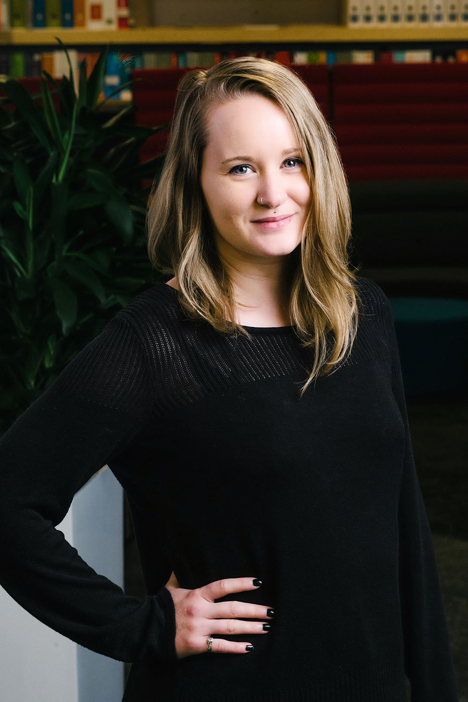

Developer. Designer. Night Owl.

HI! I'm Ashley, a graduate of Texas State Graduate with a Bachelor of Fine Arts in Communication Design and a Bachelor of Science in Advertising. I enjoy long hours of coding and complex problem solving with the smallest victories making all of those hours worthwhile.
You can view my My Senior Portfolio.
My current career is in marketing as a graphic designer at a family-owned office furniture company. However, I have always loved coding and creating digital, collateral with well thoughtout UX/UI designs. My goal is to transition from a graphic designer into a developer role.
Other than my work life, I am a homebody gamer. My time off is spent in bed or on my couch with my xbox, boyfriend and dogs. I like to play PFS and games that require tact, problem solving and critical thinking. But let's be honest, it's all about the rare loot drops.
The soundtrack of my life is sung by my two corgis, Maverick and Appa, who performs best in the middle of the night when I am trying to sleep.